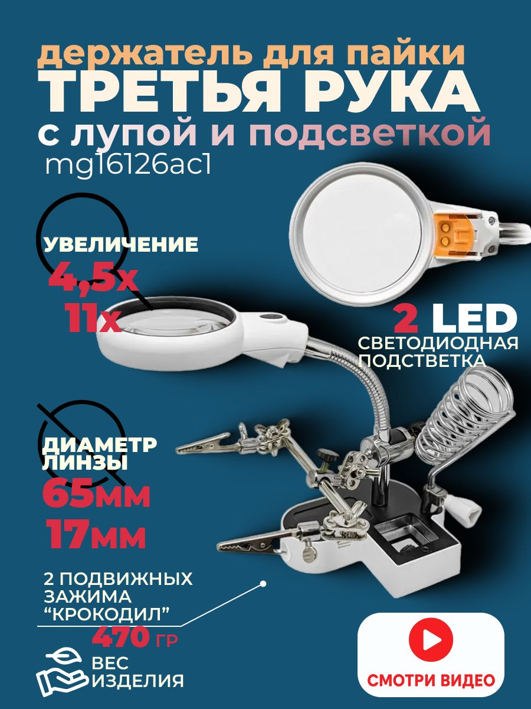

Третья рука с лупой и подсветкой MG16126AC1
ИнструментыКатегория
Инструменты
Модель
MG16126AC1
Тип
третья рука с лупой и подсветкой
Диаметр лупы
65 мм
Кратность основной линзы
4,5×
Кратность дополнительной линзы
11×
Подсветка
2 светодиода
Питание
2×AA
Назначение
фиксация деталей при пайке и точных работах
Кратко
Это «третья рука» для пайки и мелких работ: держатель с зажимами, лупой и подсветкой MG16126AC1. Используется для фиксации платы/детали и визуального контроля при ремонте и монтаже.
Описание
MG16126AC1 — настольный вспомогательный держатель с увеличительной линзой и светодиодной подсветкой для пайки, ремонта электроники, моделизма и других точных работ. По найденным описаниям это версия с лупой диаметром 65 мм, основной кратностью 4,5× и дополнительной линзой 11×. Подсветка выполнена на двух светодиодах, питание — от батареек AA. Конструкция включает гибкий штатив/шарнирную стойку и зажимы для фиксации заготовки, чтобы освободить руки во время работы.
Документация
id hw-2026-054